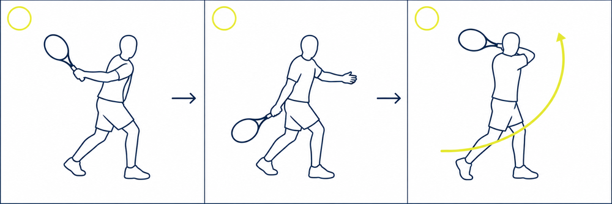

Forehand Basics
포핸드 기초
그립부터 준비 자세, 스윙 3단계까지 익혀 공을 정확하게 맞추고 넘기는 법을 배웁니다.
포핸드 그립 잡기
목표
손바닥 면과 라켓 면을 일치시켜 직관적인 그립 감각을 익힌다.
동작 설명
왼손 끝 마디로 라켓 목을 잡고, 오른 손바닥을 라켓 면에 댄 채 그대로 내려와 악수하듯이 잡는다. 손바닥이 움직이는 대로 라켓 면이 움직인다고 생각하면 면 조절이 쉬워진다. 그립 명칭은 입문 단계에서 중요하지 않다.
핵심 포인트
- 손바닥 면과 라켓 스트링 면의 평행 유지
- 그립 끝까지 손을 내려서 악수하듯 가볍게 쥔다
- 손바닥의 방향이 곧 라켓 면의 방향
기억할 장면
준비 자세
목표
안정적인 하체 스탠스와 스윙을 시작하기 위한 팔의 각도를 만든다.
동작 설명
발은 어깨 넓이로 벌리고 무릎을 살짝 굽힌다. 라켓은 몸 앞으로 살짝 내밀고, 팔꿈치와 손목의 각도를 미리 만들어 둔다. 준비 자세가 만들어져 있어야 다음 동작이 쉽게 이어진다.
핵심 포인트
- 어깨 너비의 안정적인 스탠스
- 무릎은 가볍게 굽힌다
- 팔꿈치 방향과 공간을 미리 만들어 둔다
흔한 실수
기억할 장면
유닛 턴과 테이크백
목표
팔로만 라켓을 빼지 않고 몸 전체를 틀어 스윙을 준비한다.
동작 설명
'하나'에 발만 틀고, 발을 틀면서 손도 그대로 옆으로 튼다. 왼손은 앞으로 뻗어 균형을 잡는다. 손을 뒤로 제끼면 손목이 움직이므로, 발 틀듯이 몸 전체를 틀어 라켓을 옮긴다.
핵심 포인트
- 발과 어깨가 같이 회전한다
- 손목을 고정한 채 라켓을 옆으로 옮긴다
- 왼손을 뻗어 거리감과 균형을 잡는다
흔한 실수
기억할 장면
라켓 드롭과 사선 스윙, 피니시
목표
라켓 면을 덮어 아래로 떨군 뒤 사선 위 방향으로 부드럽게 휘두른다.
동작 설명
라켓 면을 살짝 덮어 아래로 떨군 뒤, 사선 위로 올라가 왼손 위치에서 공을 만난다. 마무리는 양 팔꿈치를 채주는 느낌으로 어깨 위에서 잡는다. 왼쪽 어깨는 열지 않고 오른쪽 라인만 앞으로 나간다.
핵심 포인트
- 면을 덮으며 아래로 드롭
- 아래에서 위로 향하는 사선 스윙
- 양 팔꿈치를 들어 올리며 마무리
흔한 실수
기억할 장면
타점 설정과 공 맞추기
목표
공을 때리려 하지 말고, 스윙 궤적 안에 공을 두고 지나간다.
동작 설명
타점은 앞발보다 공 하나 정도 앞이다. 공을 넘길 생각을 하지 않고, 스윙 연습하는 자리에 공이 있다고 생각하며 그대로 지나간다. 밑에서 위로 긁고 올라가는 사선 궤적을 유지한다.
핵심 포인트
- 타점은 몸보다 앞
- 공을 때리지 말고 긁고 지나간다
- 공보다 스윙의 완결성에 집중
흔한 실수
기억할 장면
세 박자로 기억하기
동작 순서

오늘 배운 것
- 손바닥 방향이 곧 라켓 면의 방향이다
- 팔로만 빼지 않고 몸 전체를 틀어 준비한다
- 면을 덮어 떨군 뒤 아래에서 위로 사선으로 올린다
- 공을 때리지 말고 스윙 궤적 안에 공을 둔다
다음 수업까지